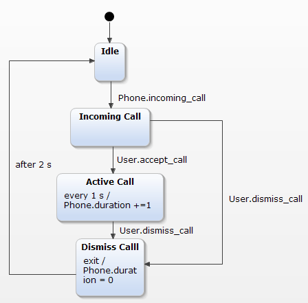
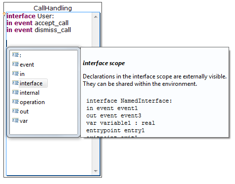

For a new installation
After installing the plugins a user guide is included in the Eclipse help. Choose Help/Help Contents from the menue. A browser window will pop up and you will find the user guide as an entry on the left side overview.
When the installation finished the wizard will ask to reopen Eclipse. The restart is important to make the newly installed software work correctly.
This tutorial will introduce the open source project Yakindu Statechart Tools (SCT).YAKINDU Statechart Tools provides an integrated modeling environment for the specification and development of reactive, event-driven systems based on the concept of statecharts. It is an easy to use tool that features sophisticated graphical state chart editing, validation and simulation of statecharts as well as code generation.
In this tutorial you will learn how to create a new statechart model, execute it with the simulation engine and generate a fully working Java statechart implementation from it. Note that this tutorial will not explain statecharts in general, so you should familiarize yourself with the basic concepts of state machines first. 1 Before we get started, make sure you have Yakindu Statechart Tools properly installed. For installation instructions see chapter Installation .
The example application we will create during this tutorial is a system for handling of incoming phone calls. After start up, the system is in an Idle state and waits for incoming calls. If a call comes in, the user can either accept the call and open a connection or dismiss it. If the connection is opened, the system tracks the duration of the call and waits for the user to hang up. After hang up, the system displays the total time of call and returns to its idle state. The complete statechart model is shown below:

The first step is to create a new Project by choosing File -> New -> Project.... The dialog offers a couple of different project types. Since we want to generate Java code later on, choose Java -> Java Project from the wizard menu. Give the project a meaningful name, i.e. CallHandling and click finish. It is good practice to separate your models from the source code. Therefore, create a new folder to the projects root by choosing File -> New -> Folder from the projects context menu and call it model.
Next, create a new statechart model by choosing File -> New -> Other -> Yakindu -> YAKINDU Statechart Model. The wizard asks for the parent folder and we choose CallHandling/model. Name the File CallHandling.sct and finish the wizard. Last, confirm the perspective switch with Yes. The statechart editor opens and show the definition of a very simple statechart.
YAKINDU statecharts are self-contained – they not only contain the definition of states and state transitions, but also the definition of the statechart interfaces. To define those interfaces, open the direct edit mode by double clicking onto the statechart definition block on the left and enter the following definition:
interface User:
in event accept_call
in event dismiss_call
interface Phone:
var duration : integer
in event incoming_call
Tip: The statechart Editor offers code completion for all textual parts. To open the content assist press
CTRL + space. For all keywords, a detailed description with example code shows up in the help hover besides the content assist window.

The example code contains two interfaces and one internal block. The User interface defines the communication of the system with the user. It consists of the two in events dismiss_call and accept_call. The Phone interface defines the communication with the underlying hardware. It provides the in event incoming_call as well as a variable duration of type integer.
Next, give the initially created state the name Idle by double clicking on the name label. The error marker will disappear. The validation of statecharts includes syntax and semantic checks of the complete statechart. Examples of validations are the detection of unreachable states, dead ends, and references to unknown events. These validation constraints are live checked during editing. In case a constraint is violated, this is visualized by warning and error markers, which are attached to the faulty model elements. By this the user gets direct and immediate feedback on the validation state of the statecharts
Now, create the three states Incoming Call, Active Call and Dismiss Call by dragging States from the palette on the right onto the main region. Connect them with the Transition tool from the palette as shown in the example model above. After each transition, select the appropriate event (use the content assist Ctrl + space to navigate from interfaces to events) in the direct editing pop up.
Finally, create the internal behavior for the states Active Call and Dismiss Call. This can either be done by opening the direct editing text box via double click or using the property view on the bottom, that supports code completion, syntax highlighting and validation, too.
If everything went well, there shouldn’t be any error markers and your example should look like the one in the following screenshot:
If something went wrong, you can still download the example project here .
To start the simulation, select your model in the project explorer on the left and select
Run As -> Yakindu Statechart from the context menu. The perspective is switched from
SC Modeling to
SC Simulation. The simulation perspective defines two additional views. The
Debug View on the top shows all running statechart instances and allows the selection of one. Note that SCT allows multiple execution of one statechart as well as parallel execution of different statecharts at the same time.
The
Simulation View on the right allows raising of events and inspection and modification of variables.
When the simulation starts, the
Idle state becomes active since it is connected with the
Initial State. This is illustrated by a red foreground color in the editor. Now, raise a event by clicking on the
incoming_call hyperlink in the
Simulation View on the right. This will trigger a state transition from
Idle to
Incoming Call. Accept the call by raising the event
accept_call. State
Active Call becomes active and the value for duration in the
Simulation View increases every second. If you are done with your phone call, raise the
dismiss_call event. After 2 seconds, the system will return to its
Idle State.
If your statechart behaves as expected, we can now go one step further and generate code out of it. Therefore, stop the simulation by pressing the
Terminate button from the toolbar on the top.
YAKINDU SCT includes code generators for Java and C out of the box. Our code generators follow a „code-only” approach and do not rely on any additional runtime library. The generated code provides a well-defined interface and can be integrated easily with any client code. In this tutorial we will generate Java code for our CallHandling example.
For code generation, SCT uses a textual generator model called SGen. This model allows customization of the code generation process. To create a new SGen model select the model folder in the project explorer on the left, and select New – Yakindu Statechart Generator Model from the context menu. On the first wizard page, enter CallHandling.sgen as the file name and press next. On the second wizard page, select Yakindu SCT Java Code Generator from the drop down menu on the top. In the statechart tree below, check the CallHandling.sct model and press Finish. The SGen Editor opens and show the following simple generator model:
GeneratorModel for yakindu::java {
statechart CallHandling {
feature Outlet {
targetProject = "CallHandling"
targetFolder = "src-gen"
}
}
}
yakindu::java is the unique ID of the code generator. This is followed by a reference to our CallHandling statechart model for that we want to generate code. Each statechart reference can contain different configuration features. The Outlet feature specifies the target project and folder for the generated artifacts.
Since we are using timed events with our after and every expression, we want the generater to provide us a default implementation for the Timer Service. Therefore, we add the following feature to our generator model
feature GeneralFeatures {
TimerService = true
}
The generator Model is executed by a builder. Thus, the artifacts are generated automatically if Project > Build Automatically is checked. If you want to execute your generator model manually, select Generate Statechart Artifacts from the Package Explorer’s context menu.
As a result, you should see a new folder src-gen in your project explorer on the left that contains the generated java artifacts. Add the generated artifacts to the Java Build Path by selecting Build Path -> Use as source folder from the src-gen folders context menu.
In the last step, we want to integrate the generated statechart implementation with some client code. Create a new class by selecting New -> Class from the context menu of the src folder in the project explorer. Give it a meaningful name, for example CallHandlingClient and hit finish.
Next, copy the following code into your created class.
1 import org.yakindu.scr.TimerService;
2 import org.yakindu.scr.callhandling.CallHandlingStatemachine;
3 public class CallHandlingClient {
4 public static void main(String[] args) throws Exception {
5 CallHandlingStatemachine sm = new CallHandlingStatemachine();
6 sm.setTimerService(new TimerService());
7 // enter the sm and active the Idle state
8 sm.enter();
9 // Raise an incoming call
10 sm.getSCIPhone().raiseIncoming_call();
11 sm.runCycle();
12 // Accept the call
13 sm.getSCIUser().raiseAccept_call();
14 sm.runCycle();
15 for (int i = 0; i < 50; i++) {
16 Thread.sleep(200);
17 sm.runCycle();
18 }
19 System.out.println(String.format("The phone call took %d s", +sm
20 .getSCIPhone().getDuration()));
21 sm.getSCIUser().raiseDismiss_call();
22 sm.runCycle();
23 }
24 }
Let’s have a detailed look at the implementation. First, create a new instanceof your Statemachine by calling the default constructor. (line 5). Since we use timed events, the statechart implementation requires an implementation of ITimerService. Because of the TimerService feature that we added to the genmodel, the code generator creates default implementation that uses the java.util.Timer. We create a new instanceof of the default TimerService and set it to the statemachine. (line 6). The call of the enter method in line 8 enteres the statechart and activates the Idle state. For each interface created in the statechart specification block, a getter for this interface is generated. (getSCIPhone() and getSCIUser()). You can access all in events and variables via these interfaces. In line 10, the incoming call event is raised, that activates the Incoming Call state after the next runcycle is executed. (line 11). In line 13, we raise the accept call event via the user interface, that activates the Active Call State after the next runcycle. (line 17). From line 15 to line 18, the runcycle is executed periodically every 200ms. After that, the duration is printed to console. (line 19, 20). Finally, the event dismiss call is executed that activated the Dimiss Call state after the next runcycle.
Finally, execute the code via Run As -> Java Application from the context menu.